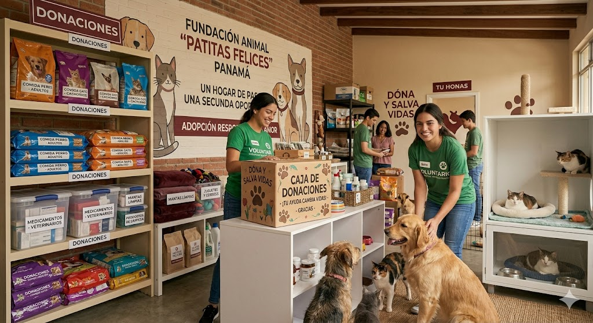
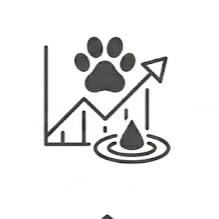
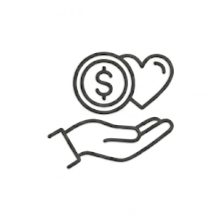

¿Perdiste o encontraste una mascota? Llama al (702) 555-GUAU para recibir ayuda
¿Perdiste o encontraste una mascota? Llama al (702) 555-GUAU para recibir ayuda
Las donaciones nos permiten cubrir gastos veterinarios, alimentación, medicamentos, transporte y materiales necesarios para el cuidado diario de los animales rescatados. Muchos de los casos que recibimos requieren atención inmediata y seguimiento constante antes de poder iniciar un proceso de adopción responsable. Cada aporte contribuye directamente al bienestar y recuperación de perros y gatos que actualmente se encuentran bajo nuestro cuidado.



Transferencia bancaria
Banco Nacional de Panamá
Cuenta Corriente: 01-245-889631
Fundación Patitas Felices
Yappy
Yappy: PatitasFelicesPA
Otros métodos
Donaciones presenciales durante jornadas y eventos
Entrega de alimentos, medicamentos y artículos de limpieza.